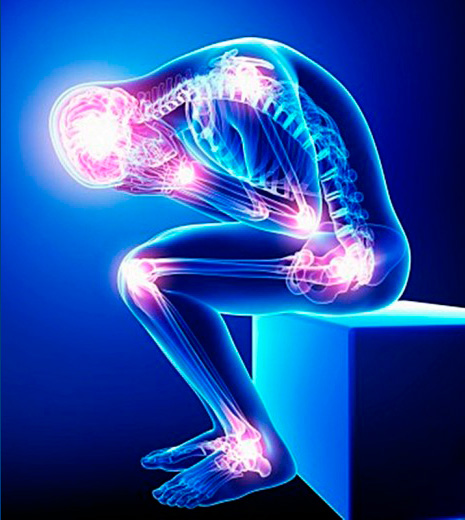

About osteoarthritis

What is osteoarthritis?
Osteoarthritis (OA) is often called the “wear and tear” of joints. This joint disease is the most common form of arthritis, and mostly affects cartilage. Cartilage is the cushion between the joints, which allows bones to smoothly glide over each other. Healthy cartilage absorbs shock from everyday movements such as walking, or jogging.
With osteoarthritis, the cartilage breaks down, resulting in bones rubbing against each other. This reduces motion of the joint, and causes immense pain and swelling. Over a long period of time, these unprotected bones may grow abnormally and break, further causing more surrounding damage.
Synovial fluid is responsible for the lubricating and shock-absorbing actions inside joints. It acts as a cushion between the bones. Degeneration of the synovial fluid (due to age or injuries) plays an important role in osteoarthritis progression.
The main function of intra-articular injections is to dispense an anti-inflammatory treatment (steroids) and to restore protective functions of synovial fluid (hyaluronic acid).
Osteoarthritis is most common in the knees, hips, shoulders, hands and fingers, and spine. Although OA can occur in people of all ages, osteoarthritis is most common in the elderly population. Risk factors include previous joint injuries, genetics (familial history), overuse of joints, obesity, and weak muscles.
Diagnosis and Treatments
Osteoarthritis can occur at any joint. Early warnings of joint degeneration include joint stiffness and swelling. Although no single test can fully diagnose OA, most physicians conduct and rely on medical history, X-rays, and physical check-ups. If you are interested in determining the status of your joints, please conduct our self-assessment test. These series of questions will inform you, and can serve as a monitoring tool of your condition. Our tests include knee (Lequesne, WOMAC), hip (Lequesne, WOMAC), and shoulder (SPADI).
To date, there are no cure for osteoarthritis. However, certain measures can be done to improve OA conditions. For example, regular exercises, weight management, pain-relief medications, joint therapies and surgery. A common treatment therapy for OA involves hyaluronic acid (HA) injections. Hyaluronan occurs naturally in the body, and its injections help improve lubrication at the joints. Our product GO-ON® is one of the best hyaluronic acid products on the market, and is approved by Health Canada, the FDA and the EMA. We have sold over 6 million products worldwide. To learn more about our product, please consult your doctor.
All About Intra-Articular Injections
Hyaluronic acid (HA) is a major component of connective tissues and articular cartilage. Due to its large molecular size, it is not normally administered via oral, intramuscular (IM) or intravenous (IV) injections. HA injections are most ideal when delivered directly into the intra-articular space. This joint space is typically filled with synovial fluid. Direct administration via the intra-articular route provides benefits such as increased localized drug concentration, and reduced adverse effects with other drugs.
Administration of hyaluronic acid into the intra-articular space plays an important role in osteoarthritis therapies. It restores the physiological characteristics of the synovial fluid, reduces pain and inflammation, and provides lubrication, while increasing the movement of joints. Intra-articular injections are typically administered 3-5 weeks per course. Its effects generally lasts for more than 6 months.
There are no interactions between intra-articular therapies with hyaluronic acid and other oral therapies (i.e. NSAIDs, or Gluocosamine products).
Intra-articular injections must be performed by a trained physician. It is always recommended to avoid heavy and strenuous activities for 3-4 days after the injection.
Consult your doctor or visit us at www.go-on-injection.com for more information.
Living with Osteoarthritis
123
Special Groups suffering from Osteoarthritis
123